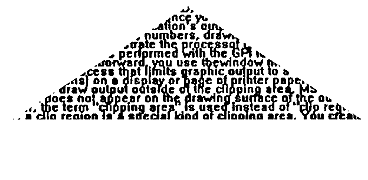

Clipping is the process an application uses to limit graphics output to a specific area (called the clipping area) of the display or page.
There are several clipping functions provided by the PM. However, if your application requires an irregular complex shape for a clipping area, it must define the shape with a path. To convert the path into a clipping boundary, use GpiSetClipPath. The clip path, as defined by this operation, becomes the current clip path for all subsequent drawing.
This function accepts a path identifier and one of two construction options as input:
Unlike the path operations described previously, GpiSetClipPath accepts two different path identifiers:
The default path identifier of 0 (SCP_RESET) resets the clip path to infinity, which displays the picture without clipping. If this value is selected, the current clip path definition is discarded instead of stored.
For GpiSetClipPath, a path identifier of 1 (SCP_AND) causes the clip path to be redefined as the mathematical intersection of the stored clip path and the current path definition. For all other path operations, an identifier of 1 specifies the current path as the recipient of the operation. The only method of specifying the clip path as the current path, after GpiSetClipPath has been called, is to call GpiSetClipPath again: the first call with a path identifier of 0; the second, with a path identifier of 1. The path identifiers and the construction mode can be ORed together for certain effects.
Any open figures within a path are closed automatically. The boundaries of the path are considered part of the interior, so any point on the boundary is not clipped. The following figure shows the result of clipping text with a triangular clip path. Triangular Clip Path